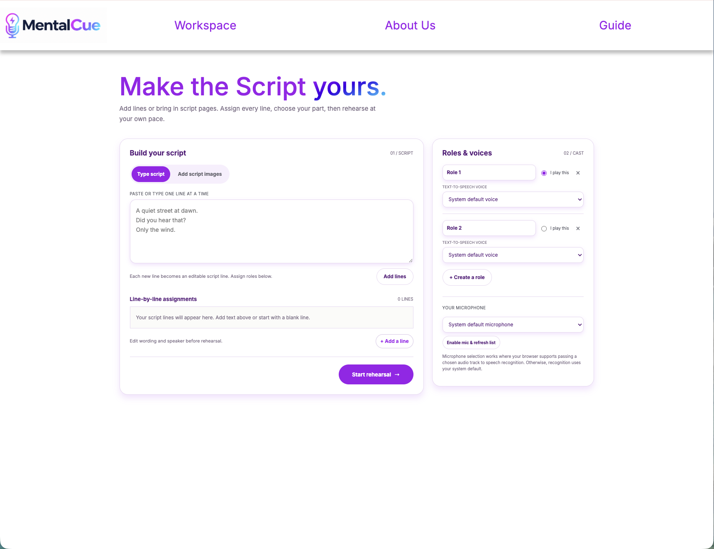
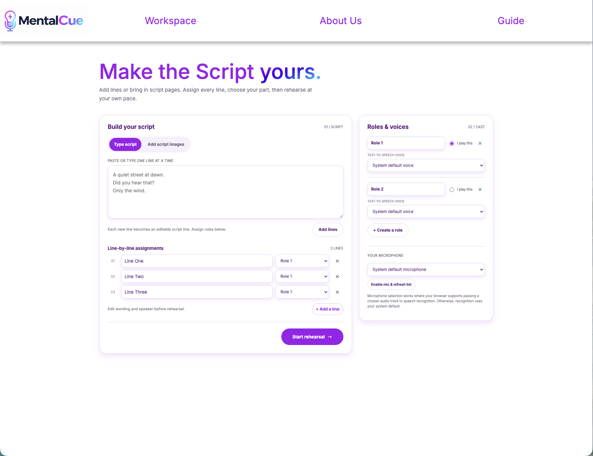
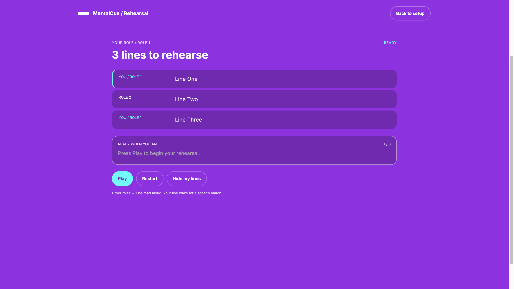

Guide
Access the guide to use MentalCue.
How to use MentalCue
Welcome to the MentalCue guide! This is a simple step-by-step guide to help you get started with this website.
First of all, to access the workspace, click on the "Workspace" tab in the navigation bar (or, click here).

Once you are in the workspace, you can either add lines manually or upload a script page. To add lines manually, type the lines in the text area and click "Add Lines". Make sure to use a space between each line. To upload a script page, click on the "Upload Script Page" button and select the file you want to upload. Note that this feature may not work as well.

Once you have added lines or uploaded a script page, you can assign every line to a specific character. To do this, click the dropdown and select the character you want to assign the line to. On the right side, you can assign the voice to the role, and choose which role you will be saying the line for.

Once you are in the Rehearsal mode, there are a few buttons you can use to control the rehearsal. You can play, pause, restart, and hide the lines assigned to you. Firstly, the button where you can Play, Pause, and Resume is the same button. Next to it is the Restart button, where you can restart the rehearsal. Next to the Restart button is the Hide Lines button, which can be used to hide your lines. In the top right corner is the Back to Setup button, which can be used to return to the workspace.
And that's it! You're all set to use MentalCue.